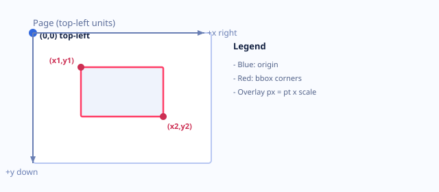

Coordinates
pdf.js renders the PDF; overlays use the same viewport. Bbox values are pt (page units), mapped with px = pt × scale. Axes are top-left (x right, y down), not PDF bottom-left.
Diagram
Two corners (x1,y1), (x2,y2) define the rectangle.

Mapping
viewport = getViewport({ scale })
px = pt × scale (per corner) → rect via min/max
px = pt × scale (per corner) → rect via min/max
Inspector: pt ≈ px / scale.
Parsers
JSON — nested scan for bbox {x1,y1,x2,y2} and page / page_number.
CSV — rows with x0,y0,x1,y1; optional page and label columns. Same bbox shape as JSON before mapping.